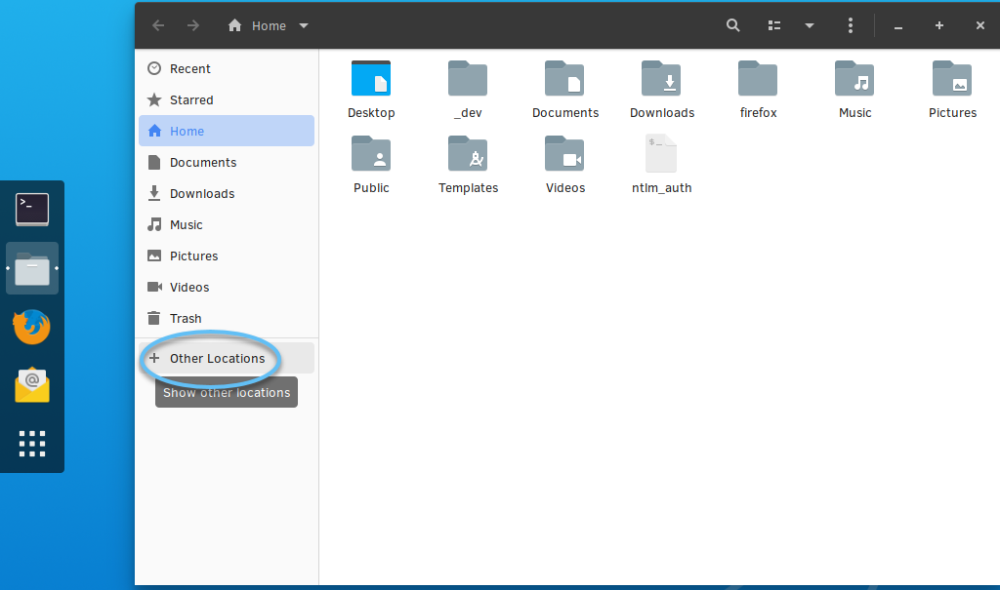
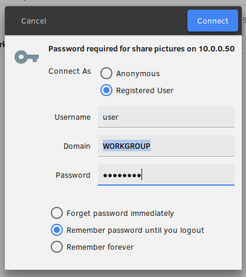

Connect to Windows* shared location from Clear Linux* OS desktop
This tutorial explains how to access an existing shared drive on Windows* via Server Message Block (SMB) / Common Internet File System (CIFS) from the Clear Linux OS GNOME desktop. CIFS filesystem is generally used to access shared storage locations, or share files.
Prerequisites
- You have already set up a shared location on Windows
Connect to Windows shared location with Nautilus
From the desktop, select Files from the application menu.
Note
GNOME Files is also known as Nautilus.
In Files, select Other Locations.
Figure 1: Files, Other Locations
In the lower taskbar, beside Connect to Server, enter the file-sharing address using the Windows sharing schema:
smb://servername/Share

Figure 2: Connect to Server
Optional: If there are issues with DNS, you can use an IP address in place of the servername above. You must still specify the share.
Optional: On the Windows machine, in a CLI, retrieve the IP address by entering the command:
ifconfig
Note
If using the IP address, assure that it is accessible and secure.
Select Connect.
The server will request authentication, as shown in Figure 3.
Figure 3: Authentication
Log in with the same Windows system credentials for which you granted access to the share.
Select the appropriate checkbox to save your credentials. Consider carefully the security risks as a result of your selection.
{kind=link}
{kind=link}